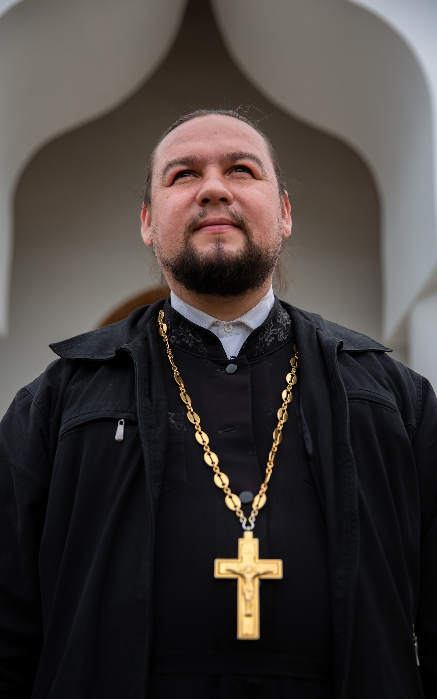

Храм Рождества Иоанна Предтечи села Алеканово
Расписание Богослужений
Настоятель

Иерей Владимир Любимский
Дата рождения: 25 января 1982 года
Духовное образование: Рязанская православная духовная семинария
Хиротонисан: во диакона — 23 июля 2006 года; во иерея — 5 ноября 2006 года
Контактный телефон: 8-920-631-53-99
Подать записку
Храм в социальных сетях
ВКонтакте
Telegram
YouTube
Помочь храму